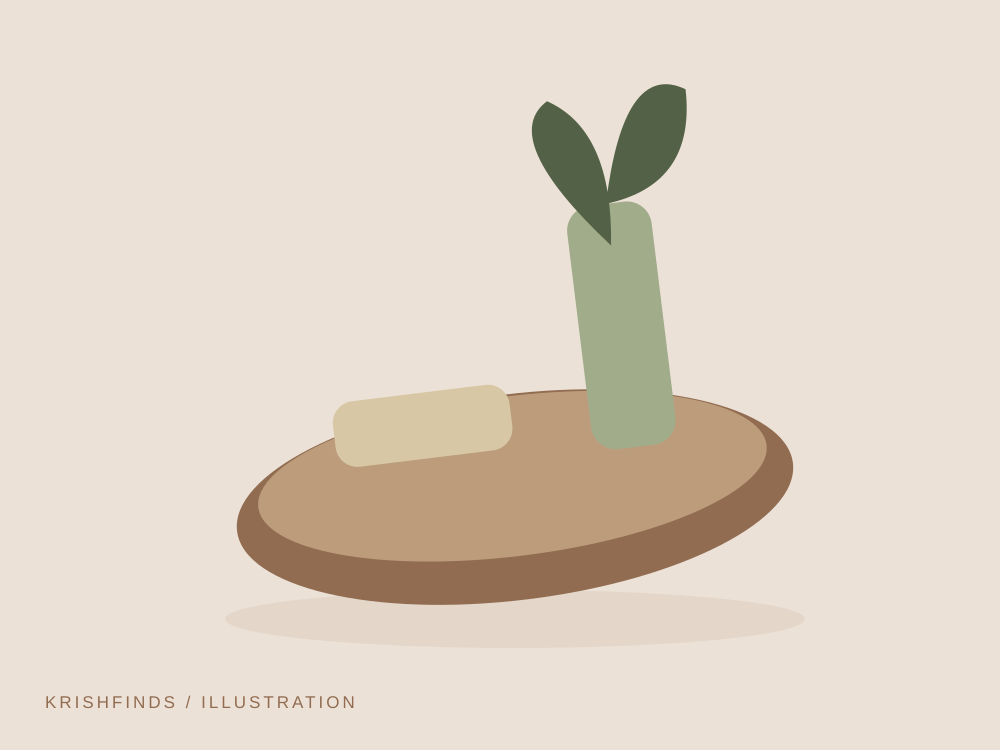
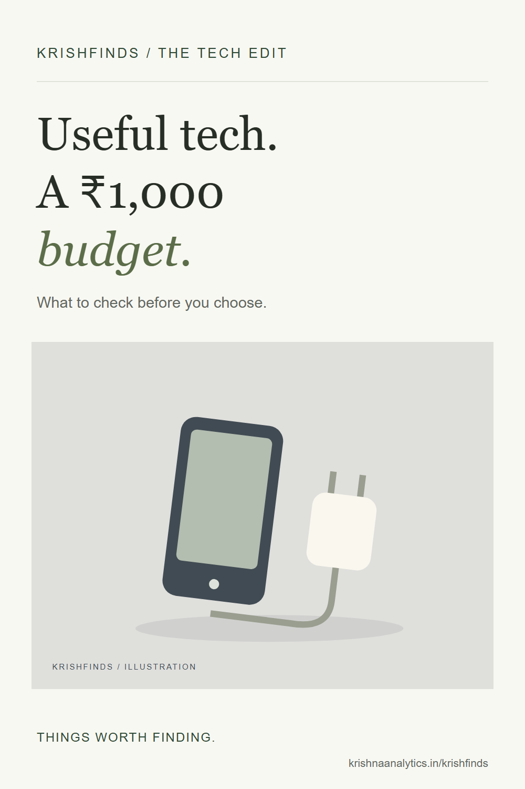

Treat ₹1,000 as a spending limit, not a verified product price. These are product types to research; current prices have not been supplied or checked. Compare compatibility and seller details before deciding, and skip anything that does not fit your budget.
Some links on KrishFinds are affiliate links. I may earn a commission if you purchase through them at no additional cost to you. As an Amazon Associate I earn from qualifying purchases. Read the disclosure.
These are generic product ideas, with illustrative placeholders. No specific model has been tested or rated here. Check current specifications and availability before buying.
Charging Cable

A spare cable with the right connectors. Think about whether it solves a recurring problem for you before adding it to your bag or workspace.
- Why it’s useful
- A clearly labelled cable is easier to grab when leaving in a hurry.
- Best for
- A small charging kit.
- Considerations
- Match connector type, supported wattage and cable length to your device.
Reusable Cable Ties

Gather the loose ends around your desk. Think about whether it solves a recurring problem for you before adding it to your bag or workspace.
- Why it’s useful
- Reusable ties are easy to adjust when your setup changes.
- Best for
- Charging leads and monitor cables.
- Considerations
- Leave slack at connectors and avoid over-tightening.
Microfibre Cleaning Cloth

A washable cloth for everyday tidying. Think about whether it solves a recurring problem for you before adding it to your bag or workspace.
- Why it’s useful
- A reusable cloth is a simple addition to an existing cleaning routine.
- Best for
- Suitable hard surfaces.
- Considerations
- Follow surface-care guidance, especially for coated screens.
Final thoughts
Start with one thing that addresses an everyday frustration. Check fit and compatibility, compare the details, and give yourself permission to use what you already own. A useful find should make your day simpler.

A useful idea to come back to.
Keep this guide for your next everyday upgrade.
Download the Pinterest cover ↓


{kind=link}